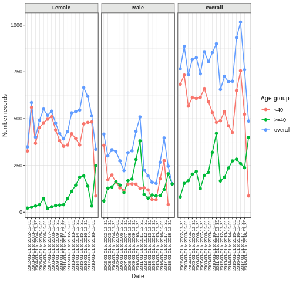

Community provided software for working with OMOP data
Last updated on 2025-09-17 | Edit this page
Overview
Questions
- What are some of the R tools that can work on OMOP CDM instances ?
Objectives
- Brief outline of some R tools that will be useful for new OMOP users.
Introduction
There are a range of community provided R tools that can help you work with instances of OMOP data.
We are going to show you a brief summary of some that are likely to be of use to new users.
With each you may need to balance the need to learn some new syntax with the benefits of the extra functionality that the package provides.
TODO maybe add a table with links to packages & brief descriptions.
OmopSketch To summarise an OMOP database.
CodelistGenerator To generate lists of OMOP concepts.
OmopSketch To summarise key information about an OMOP database. To provide a broad characterisation of the data and to allow users to evaluate whether they are suitable for particular research.
First we can install the package and its dependencies and connect to some mock data.
R
#without dependencies=TRUE it failed needing omock & VisOmopResults
#with dependencies it installed 91 packages in 1.8 minutes
install.packages("OmopSketch", dependencies=TRUE, quiet=TRUE)
library(dplyr)
library(OmopSketch)
# Connect to mock database
cdm <- mockOmopSketch()
summarise* and table* functions
The package has the following types of functions :
| function start | what it does |
|---|---|
| summarise* | generate results objects. |
| table* | convert results objects to tables for display. |
Snapshot
Snapshot creates a broad summary of the database including person count, temporal extent and other metadata.
R
summariseOmopSnapshot(cdm) |>
tableOmopSnapshot(type = "gt")
| Estimate |
Database name
|
|---|---|
| mockOmopSketch | |
| General | |
| Snapshot date | 2025-09-17 |
| Person count | 100 |
| Vocabulary version | v5.0 18-JAN-19 |
| Observation period | |
| N | 100 |
| Start date | 1958-01-22 |
| End date | 2019-12-24 |
| Cdm | |
| Source name | eunomia |
| Version | 5.3 |
| Holder name | - |
| Release date | - |
| Description | - |
| Documentation reference | - |
| Source type | duckdb |
Missing data
Summarise missing data in each column of one or many cdm tables.
R
missingData <- summariseMissingData(cdm, c("drug_exposure"))
tableMissingData(missingData)
| Column name | Estimate name |
Database name
|
|---|---|---|
| mockOmopSketch | ||
| drug_exposure | ||
| drug_exposure_id | N missing data (%) | 0 (0.00%) |
| N zeros (%) | 0 (0.00%) | |
| person_id | N missing data (%) | 0 (0.00%) |
| N zeros (%) | 0 (0.00%) | |
| drug_concept_id | N missing data (%) | 0 (0.00%) |
| N zeros (%) | 0 (0.00%) | |
| drug_exposure_start_date | N missing data (%) | 0 (0.00%) |
| drug_exposure_start_datetime | N missing data (%) | 21,600 (100.00%) |
| drug_exposure_end_date | N missing data (%) | 0 (0.00%) |
| drug_exposure_end_datetime | N missing data (%) | 21,600 (100.00%) |
| verbatim_end_date | N missing data (%) | 21,600 (100.00%) |
| drug_type_concept_id | N missing data (%) | 0 (0.00%) |
| N zeros (%) | 0 (0.00%) | |
| stop_reason | N missing data (%) | 21,600 (100.00%) |
| refills | N missing data (%) | 21,600 (100.00%) |
| quantity | N missing data (%) | 21,600 (100.00%) |
| days_supply | N missing data (%) | 21,600 (100.00%) |
| sig | N missing data (%) | 21,600 (100.00%) |
| route_concept_id | N missing data (%) | 21,600 (100.00%) |
| N zeros (%) | 0 (0.00%) | |
| lot_number | N missing data (%) | 21,600 (100.00%) |
| provider_id | N missing data (%) | 21,600 (100.00%) |
| N zeros (%) | 0 (0.00%) | |
| visit_occurrence_id | N missing data (%) | 0 (0.00%) |
| N zeros (%) | 0 (0.00%) | |
| visit_detail_id | N missing data (%) | 21,600 (100.00%) |
| N zeros (%) | 0 (0.00%) | |
| drug_source_value | N missing data (%) | 21,600 (100.00%) |
| drug_source_concept_id | N missing data (%) | 21,600 (100.00%) |
| N zeros (%) | 0 (0.00%) | |
| route_source_value | N missing data (%) | 21,600 (100.00%) |
| dose_unit_source_value | N missing data (%) | 21,600 (100.00%) |
Clinical Records
Allows you to summarise omop tables from a cdm. By default it gives measures including records per person, how many concepts are standard and source vocabularies.
R
summariseClinicalRecords(cdm, "condition_occurrence") |>
tableClinicalRecords(type = "gt")
| Variable name | Variable level | Estimate name |
Database name
|
|---|---|---|---|
| mockOmopSketch | |||
| condition_occurrence | |||
| Number records | - | N | 8,400 |
| Number subjects | - | N (%) | 100 (100.00%) |
| Records per person | - | Mean (SD) | 84.00 (9.83) |
| Median [Q25 - Q75] | 84 [77 - 91] | ||
| Range [min to max] | [65 to 107] | ||
| In observation | Yes | N (%) | 8,400 (100.00%) |
| Domain | Condition | N (%) | 8,400 (100.00%) |
| Source vocabulary | No matching concept | N (%) | 8,400 (100.00%) |
| Standard concept | S | N (%) | 8,400 (100.00%) |
| Type concept id | Unknown type concept: 1 | N (%) | 8,400 (100.00%) |
You can also
- apply to more than one table at a time
- reduce the measures of records per person
- reduce the number of rows by setting options to FALSE
- stratify by sex and/or age
- set a date range
R
summariseClinicalRecords(cdm, c("drug_exposure","measurement"),
recordsPerPerson = c("mean", "sd"),
inObservation = FALSE,
standardConcept = FALSE,
sourceVocabulary = FALSE,
domainId = FALSE,
typeConcept = FALSE,
sex = TRUE) |>
tableClinicalRecords(type = "gt")
| Variable name | Variable level | Estimate name |
Database name
|
|---|---|---|---|
| mockOmopSketch | |||
| drug_exposure; overall | |||
| Number records | - | N | 21,600.00 |
| Number subjects | - | N (%) | 100 (100.00%) |
| Records per person | - | Mean (SD) | 216.00 (14.47) |
| drug_exposure; Female | |||
| Number records | - | N | 13,526.00 |
| Number subjects | - | N (%) | 63 (100.00%) |
| Records per person | - | Mean (SD) | 214.70 (15.68) |
| drug_exposure; Male | |||
| Number records | - | N | 8,074.00 |
| Number subjects | - | N (%) | 37 (100.00%) |
| Records per person | - | Mean (SD) | 218.22 (12.01) |
| measurement; overall | |||
| Number records | - | N | 5,900.00 |
| Number subjects | - | N (%) | 100 (100.00%) |
| Records per person | - | Mean (SD) | 59.00 (7.85) |
| measurement; Female | |||
| Number records | - | N | 3,742.00 |
| Number subjects | - | N (%) | 63 (100.00%) |
| Records per person | - | Mean (SD) | 59.40 (8.37) |
| measurement; Male | |||
| Number records | - | N | 2,158.00 |
| Number subjects | - | N (%) | 37 (100.00%) |
| Records per person | - | Mean (SD) | 58.32 (6.93) |
Record counts over time
You can plot the number of records over time for any cdm table also stratified by age and sex (so behind the scenes this will be joining clinical tables to the person table).
R
recordCount <- summariseRecordCount(cdm,
omopTableName = "drug_exposure",
interval = "years",
sex = TRUE,
ageGroup = list("<40" = c(0,39), ">=40" = c(40, Inf)),
dateRange = as.Date(c("2002-01-01", NA)))
plotRecordCount(recordCount, facet = "sex", colour = "age_group")

Concept Id counts
You can get a summary of the numbers of concept ids in a cdm table. Unfortuntaely the summary doesn’t display here but you can copy and paste the code into your console to see it.
R
result <- summariseConceptIdCounts(cdm = cdm, omopTableName = "condition_occurrence")
tableConceptIdCounts(head(result,5), display = "standard", type = "datatable")
- Brief outline of some R tools that will be useful for new OMOP users.